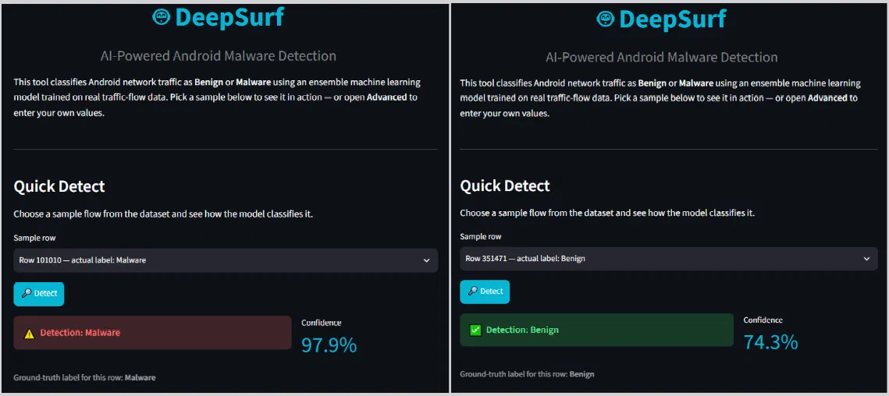

Teaching a model to smell malware
Aug 26, 2026
Here's the question that started DeepSurf: can you tell whether an Android app is malicious just by watching how its network traffic behaves, without ever opening the code? I didn't know the answer going in. Turns out — mostly, yes, but getting there taught me more about evaluation than about malware.
I trained an ensemble across a wide spread of models — Logistic Regression, Decision Tree, Random Forest, Gradient Boosting, AdaBoost, GaussianNB, LightGBM, XGBoost, SVM, KNN, and both soft and hard voting ensembles — on real traffic-flow data. The spread in results was bigger than I expected going in. Some models that looked perfectly fine on accuracy quietly fell apart on recall, which matters more here than almost any other metric, because a missed piece of malware is a lot more expensive than a false alarm.
The project ended up published at IEMTRONICS 2025 (Springer), which was a genuinely nice surprise. But the part I actually enjoyed building was the demo. A notebook full of metrics doesn't convince anyone of anything — so I built a small interactive tool where you feed it a real traffic sample and watch it classify Benign vs. Malware live, confidence score included.

Same model, two different traffic samples — one flagged Malware at 97.9% confidence, the other Benign at 74.3%.
That confidence gap between the two samples is the interesting bit. High-confidence correct calls are easy to be happy about. It's the lower-confidence ones — the model saying "benign, but only 74% sure" — that tell you where the actual decision boundary is fuzzy, and where I'd focus next if I kept pushing this further.